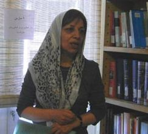

پذيرش > اخبار > بیانیه بیش از400نفراز فعالان حقوق زنان،نویسندگان، فعالان سیاسی و مدنی دراعتراض به (...)


 بیانیه بیش از400نفراز فعالان حقوق زنان،نویسندگان، فعالان سیاسی و مدنی دراعتراض به زندانی کردن منیژه نجم عراقی نویسنده ،مترجم و فعال جنبش زنان بیانیه بیش از400نفراز فعالان حقوق زنان،نویسندگان، فعالان سیاسی و مدنی دراعتراض به زندانی کردن منیژه نجم عراقی نویسنده ،مترجم و فعال جنبش زنان
12 خرداد 1391 - - نسخه قابل چاپ
این بار منیژه نجم عراقی، فعال حقوق زنان، نویسنده و مترجم روز یک شنبه هفتم خرداد1391 روانه ی زندان اوین شد. پیش از این نیز پس از هجوم ماموران امنیتی در تاریخ سوم شهریور 1389 به منزل خانم منیژه نجم عراقی و ضبط اسناد و مدارک وی ،دادگاه طبق معمول اورا به اتهام «تبلیغ علیه نظام» به یک سال زندان محکوم کرد. شرکت در مراسم بزرگداشت زنده یادانِ جان باخته ،محمد مختاری و محمد جعفر پوینده، و شاعر توانا احمد شاملو، از جمله اتهاماتی است که توسط دادگاه به او وارد شده است.
منیژه عراقی دارای آثاری در زمینه ادبیات فمینیستی است از جمله: "جامعه شناسی زنان"، "درآمدی جامع بر نظریه های فمینیستی" ، "زن و ادبیات"، "منبع شناسی زنان " و ترجمه ی آثاری از جمله "زن و سینما" و "گفت و گوی خودمانی با جرمین گریر" و درباره جنبش زنان، مناظره فمینیستی.
امضاکنندگان این بیانیه زندانی کردن منیژه نجم عراقی را قویا محکوم کرده و می خواهند که جمهوری اسلامی دست از پرونده سازی علیه فعالان حقوق زن، نویسندگان و متفکرین، روزنامه نگاران، فعالان کارگری ، دانشجویان، معلمان، وکلا، فعالین سیاسی و مدنی بر دارد و نسبت به آزادی فوری و بی قید و شرط آن ها اقدام کند.
اسامی امضا کنندگان:
آذر امین ،آریا ملک ،آذرمیدخت اذر شهاب، آسیه امینی ، انور میرستاری ، بیژن افتخاری ، آذر کاشانی ، آذر محلوجیان ، آذر منصوری ، آذر یغمایی ، آرش نصیری اقبالی ، آریا ارس ، آریا ملک ، آزاد مراديان ، آزاده بهکیش ، آزاده دواچی ، آزاده خسرو شاهی، آزاده فرامرزیها، آزيتا سيدي ، آزیتا رحیم پور ، آزیتا رضوان ، آسیه امینی ، آیت نجفی ، آیدا سعادت ، آیدا قجر ، آینده آزاد ، ابراهیم غفاری ، ابراهیم مهتری ، ابوافضل اردوخانی ، ابوالفضل (پویا) جهاندار ، احترام بهدوست ، احسان بداغی ، احمد آزاد ، احمد یزدانی ، اختر قاسمی ، ارشاد علیجانی ، اسماعیل ختائی ، اسماعیل واصفی ، اسو صالح ، اشکان بندری ، اصغر جیلو ، اصغر دانایی ، اصغر نصرتی ، افتخار سادات بادپا ، افتخار قاسمی ، اقدس چرونده ، اكبر معارفي ، اکبر کریمیان ، اکبرزینالی ، اکرم محمدی ،ا کرم نقابی ، الهه امانی ، الهه گلکار ، ام البنین ابراهیمی ، امجد حسین پناهی ، امیر درخشان ، امیرمحسن محمدی ، انسیه سلمانی، انور میر ستاری، ایراندخت انصاری، ایرج شکری، بابک امیرخسروی، بابک شکری، باقر فاطمی، بتول عزیزپور، بنفشه جمالی،بنفشه حجازی ، بهاره افقهی، بهرام پرتوی،بهرام لطیفی ،بهروز ستوده ، بهروز سورن، بهمن امینی ،بهمن مبشری ،بهناز مهرانی ، بهنام امینی ،بهناز اعتمادی ، بورگان نظامی نرج آبادی ، بیژن پیرزاده ، پارسیان ملک،پردیس شفافی ،پرستو فروهر ،پروانه وحید منش ،پرویز داور پناه ، پروین اردلان ،پروین بختیار نژاد ،پروین شهبازی ،پروین ملک ،پری علی بیگی سروش،پری نعمانی ، پروانه میلانی ،پریسا کاکایی، پریمهر رشدی،پوران ابراهیمی،پوران رضایی،پویاعزیزی، پویاغلامرضایی،پویش عزیزالدین ، پیام داودی ، تکتم قاسمی،ترانه امیرتیموری، توران ناظمی ، توران همتی ، تونیا ولی اوغلی، ثریا فلاح ، جلوه جواهری ، جمشید طاهری پور، جمیله ناهید، جمیله ندایی، جهانگیر لقایی، جواد جواهری، حامد تهرانی، حامد ملکی ، حامیان مادران پارک لاله/لس آنجلس-ولی، حسن بهگر، حسن جعفری، حسن عربزاده ، حسن کلانتری، حسن نایب هاشم، حسن یوسفی اشکوری، حسین رفسنجانی، حسین علوی، حسین لاجوردی، حلیمه رسولی، حماد شیبانی، حميد ارهنجی پور، حمید بی آزار، حمید رضا رضایی، حمید کوثری، حمید مافی، حمید نوذری ، حمیده نظامی ، خالد بایزیدی دلر، خدیجه مقدم، خسرو امجدی ، خسرو بندری ، خسرو فهیم، خشایار محمودی ، خیر اله فرجی، داریوش رضایی ، راحلە اساسی، رامین خرسندی، رحمان جوانمردی ، رضا برومند، رضا بی شتاب ، رضا حسین بر، رضا سجودی، رضا سیاووشی، رضا صديق، رضا صنیعی فر، رضا علیجانی، رضا فانی یزدی ، رضا کاویانی ، رضا کریمی ،رضا گوهرزاد، رضا هیوا، رضوان مقدم ، رکسانا راد ، روجا روشن ، روحی شفیعی ، روژین شریفی ، روشنک احمدی ، رویا صحرائی ، رویا طلوعی ، رویا کاشفی ، ریحانه اسماعیلی ، زری کوچک زاده ، زهرا حسینی ، زهرا مهدوی ، زهراابراهیمی، زهره اسدپور، زهره حسینی ، زهره کریمی زیبا دنا ، زیبا میرحسینی ، ژاله حریری ، ژاله رزمی ، ژانت افاری ، ژیل گلعنبر ، ساسان امجدیان ، ساغر کیاسی ، سالومه رحیمی ، سپیده پورآقایی ، سپیده حداد ، سپیده فارسی ، ستاره هاشمی ، سحر دیناروند، سعید بابایی ، سعیده راوندی ، سعید کلانکی ، سمیه رشیدی ، سهیل پرهیزی ، سوده راد ، سوزان رمضان زاده ، سوسن ایزدی ، سوسن طهماسبی، سوسن محمدخانی غیاثوند ، سوفیا صدیق پور، سيامک سلطانی ، سیما حسین زاده ، سیمامختاری ، سیمونه بخش ، شادی صوفیزادە ، شاهین انزلی ، شاون نواختر، شکوفه امیری ، شکوفە قبادی ، شکوه میرزادگی ، شلیر باپیری، شلیر شبلی ، شمس باباپور، شمس تولایی ، شهرام پاینده ، شهروز رشید، شهلا انتصاری ، شهلا بهار دوست ، شهناز بیات ،شهناز شاهینی ، شهناز غلامی ، شهناز قرآنی ، شهین بنی احمدی ، شهین دوستدار، شيرين فاميلي ، شیدا افتاده ، شیما پیامی ، شیوا نوجو ، صادق کار، صادق ناهوی ، صبا طهماسبی ، صبا واصفی ، صبری نجفی ، صدیقه شکری ، صنم واعظی ،طاهره دانش، طلعت ابراهیمی ، طلعت تقی نیا ، عباس رحیمیان ، عبدالحميد معصومی تهرانی، عسل پیرزاده ، عشرت بستجانی ، عصمت بهرامی ، عفت ماهباز، علی ابراهیمی ، علی اشرفی ، علی اکبر مهدی ، علی پورنقوی ، علی شاکری ، علی عبدالرضایی ، علی قادری ، علی رضا جباری ، فاطمه رضایی، فاطمه حقیقت جو، فاطمه خانی ، فاطمه شکری ، فاطمه مسجدی ، فرانک حسین پور، فرج صنیعی فر، فرح شریفی ، فرح کمانگر، فرزاد پورمرادی ، فرزانه عظیمی ، فرزین بستجانی ، فرشین کاظمی نیا ، فرناز کمالی، فرهاد فرجاد، فرهاد توانانیا ، فرهنگ قاسی ، فروغ سمیع نیا ، فريده يزدی فریبا بستجانی فریبا داودی مهاجر، فریبا عطائیان ، فریبا عظیمی، فریبا محمدی ، فریده یزدی ، فریده اسکندری ،فریبا عزتیان ، فواد فتاحی ، فیروزه مهاجر، کاظم علمداری ، کاظم کردوانی ، کاوه کرمانشاهی ، کاوه مظفری ، کاوه هامونی ، کاویان صادق زاده میلانی ، کتایون عطیمی فرد، کلارا مرادیان ، کمال ارس ، کورش رضایی ، گلالە سمیعی ، گلاویژحمیدی ، گلرخ جهانگیری ، گودرز اقتداری ، گوهر شمیرانی ، گیتی سلامی ،گیتی کاوه،لارا یونسیان، لیلا اسدی ، لیلا سیف الهی ، لیلا صحت ، لیلا صمدی ، لیلا کرامی ، ماریا رشیدی ، ماریامحبوبی مانداناامینی، ماندانا نوری ، محبوبه عباسقلی زاده ، محبوبه منصوری ،محبوبه حسین زاده، محسن عظیمی، محمد برقعی ، محمد ترابی ، محمد رجبی ، محمد رحمان زاده ، محمد شوراب، محمد قادر محمدی، محمد نصیری ، مرسده صالحبور، مرضیه رستگار،مرضیه وفا ، مریم اکبری ، مریم اهری ، مریم حسین خواه ، مریم حکمت شعار، مریم کاویانی ، مریم وفا مهر ،مهین میلانی ،مهری فراهانی ،مریم محسنی ، مریم محمدی ، مریم نظری ، مزدک عبدی پور، مسعود آذری ، مسعود شب افروز، مسعود فتحی ، مصطفا شفافی ، مصطفی مرید، مصطفی ملکی ، معصومه زمانی ، معصومه ضیا ، معصومه طرفه ، ملیکا فاتح ، منصور اسالو ، منصوره بهکیش، منصوره حبیب ، منصوره شجاعی ، منصوره فتحی ، منوچهر سالکی ، منور امین پور ،منوچهرمقصودلو ، منیره برادران ، منیره کاظمی ، مهتاب معتمدی ،مهیارمینوی، مهدی خانبابا تهرانی ، مهدی فتاپور، مهدی ملکی ، مهدیه صالح پور، مهدیه فراهانی ، مهر انگیز کار ، مهران براتى ، مهری جعفری ، مهشيد پگاهى ، مهشید راستی ، مهناز پراکند ، مهناز صداقتی ، مهناز هدایتی ، مهوش منافی ، مهین شکراللە پور، مهین شهریاری ، میترا آریان ، میثاق پارسا ،میلاد احمدی، میلاد ملک ، مینا نیک ،نازلی صدری مهر ، نادره حسینی ، نازنین کاظمی ، ناسی بیاتی ، ناصر زراعتی ، ناصرشعبانی ، ناهید انتصاری ناهید بارور، ناهید جعفری ، ناهید حسن زاده ، ناهید حسینی ، ناهید کشاورز، ناهید مکری ، ندا فرخ ، نرگس کرمانشاهی ، نسرین افضلی ،نسرین آل آقا ، نسرین بصیری ، نسیم دریاب ، نعیمه دوستدار ، نوبهار شریفی ، نوشین احمدی خراسانی ، نوید محبی ، نیره توحیدی ، نیره جلالی (مادر بهکیش ) ، نیکزاد زنگنه ،نیکونجفی، نیما احسانی ، نیما نیمایی ، هادی مختاری ، هایده تابش ، هایده روش ، هدایت متین دفتری ، هما بدیهیان ، ویدا حاجبی تبریزی ، ویکتوریا آزاد ، یداله کوچکی دهشالی ، یوسف سهرابیان
ارسال به
بالاترین
،
توییتر
،
فریندفید
،
فیسبوک
در همين بخش :
 پروین ذبیحی برنده جایزه حقوق بشری سازمان غيردولتى اتريشى سودويند شد پروین ذبیحی برنده جایزه حقوق بشری سازمان غيردولتى اتريشى سودويند شد
پخش کارت پستال و بروشور در روز جهانی زن در تهران
تمدید زمان برای امضای بیانیهی جمعی از فعالان زن به مناسبت هشت مارس
مجوزی که در نطفه خفه شد
بیش از 2000 امضا در اعتراض به تبعیض های آموزشی به مجلس تحویل داده شد
ديگر بخش ها :
طرح یک میلیون امضا
|
مقالات
|
سایت نوشته ها
|
اخبار
|
گزارش كمپين
|
گفت و گو
|
علیه سکوت
|
كوچه به كوچه
|
نامه های شما
|
گزارش ویژه
|
گفتگو با اعضا
|
ویژه سالگرد کمپین
|
تصویر برابری
|
دل آرام علی
|
تریبون
|
مقالات
|
تاریخ شفاهی
|
خارج از چارچوب
|
کتابخانه
|
درباره کمپین
|
کمپین در شهرها
|
کمپین در بند
|
صدای تغییر
|
ویژه 22 خرداد
|
لایحه حمایت از خانواده
|
گالری
|
عشا مومنی
|
امیر یعقوبعلی
|
خدیجه مقدم
|
راحله عسگری زاده و نسیم خسروی
|
پروین اردلان،جلوه جواهری، مریم حسین خواه، ناهید کشاورز
|
زینب پیغمبرزاده
|
سعیده امین، سارا ایمانیان، محبوبه حسین زاده، ناهید کشاورز و همایون نامی
|
احترام شادفر
|
نسیم سرابندی زاده،فاطمه دهدشتی
|
وبلاگ مهمان
|
پرونده خرم آباد
|
دستگیری ها
|
مریم مالک
|
پرستو اللهیاری
|
مهرنوش اعتمادی
|
سمیه رشیدی
|
Other Languages
|
همراهان
|
«فراخوان کمپین ده روز با بهاره هدایت»
| English
|